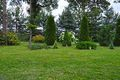
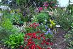
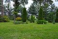
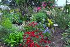

Nasze gospodarstwo szkółkarskie znajduje się w miejscowości Piecki, w powiecie mrągowskim, w malowniczej Krainie Wielkich Jezior Mazurskich. Hobby i pasję naszej rodziny postanowiliśmy przenieść na profesjonalną produkcję. Pragniemy skierować naszą ofertę do klientów indywidualnych, sklepów ogrodniczych i architektów krajobrazu, a także pasjonatów i kolekcjonerów. Od lat pracujemy nad poszerzaniem naszej oferty.
 



Obecnie posiadamy w sprzedaży: róże, drzewa i krzewy liściaste, drzewa i krzewy iglaste, drzewa i krzewy owocowe, rośliny szczepione na pniu, byliny i pnącza. Stale wprowadzamy nowe rośliny, sprawdzone pod względem odporności na niełatwe warunki klimatyczne panujące w północno-wschodniej Polsce.
Naszą jakość gwarantuje: pozyskiwanie własnych sadzonek, właściwie dobrane, wysokojakościowe podłoże, regularne nawożenie, ochrona przed szkodnikami, formowanie roślin. Wszystkich miłośników roślin zachęcamy do odwiedzenia naszego gospodarstwa!